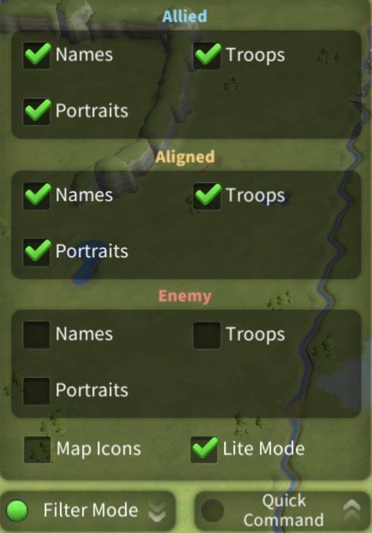
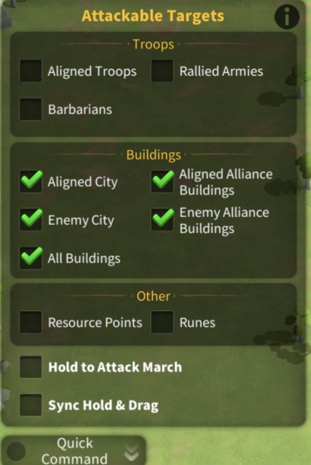
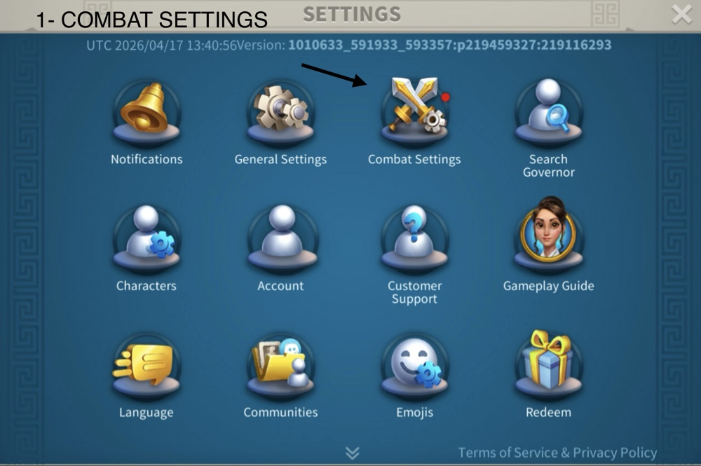
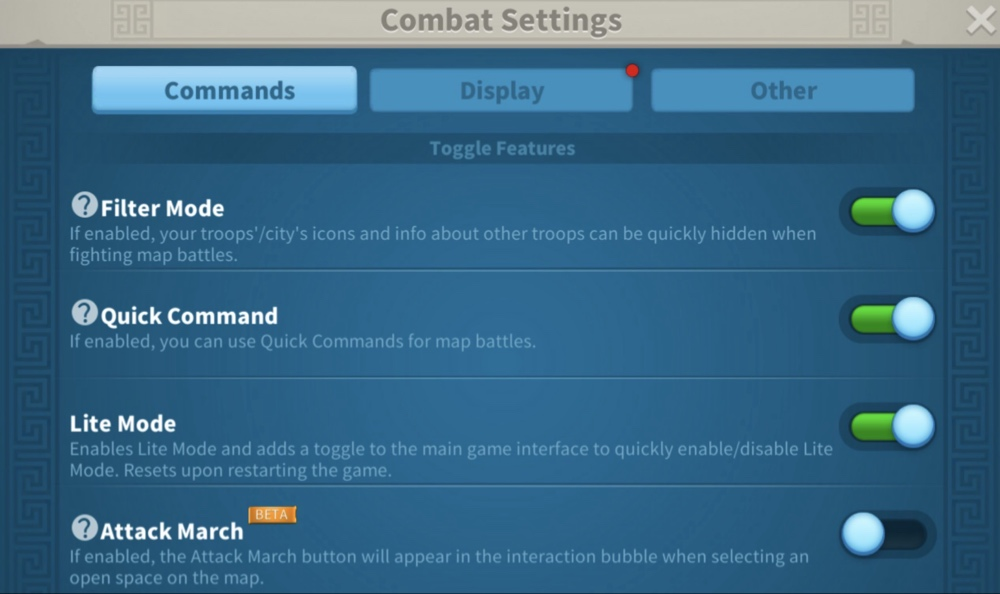
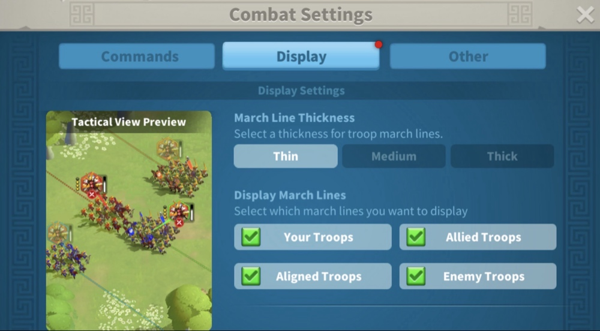
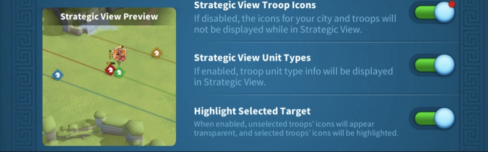
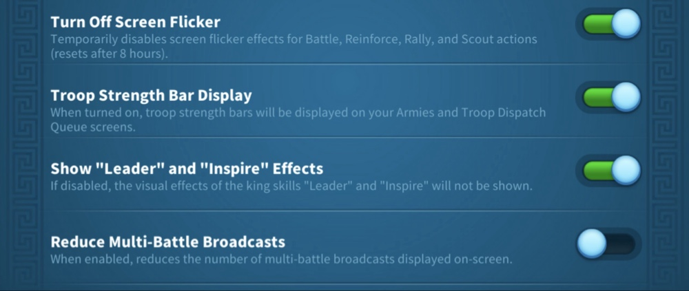

During Field Fights: Necessary Steps
DOT MODE
Filter Mode Configuration
Use these specific settings for Dot Mode. This allows you to fight efficiently in the field with minimum lag by filtering out unnecessary clutter.

MOVEMENT
Quick Command Mechanics
Uncheck these boxes so you can tap the screen and move your march without interference. For example, if you uncheck "Resource Points," you can tap a node and your march will ignore it and keep moving to your target.

Standard Combat Configuration
01
Combat Menu Navigation

02
Toggle Features

03
Strategic View

04
Tactical Display (Thin Lines)

05
Battle Visuals
